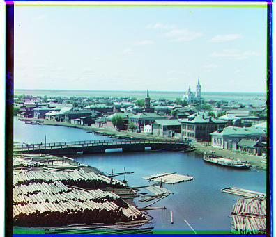
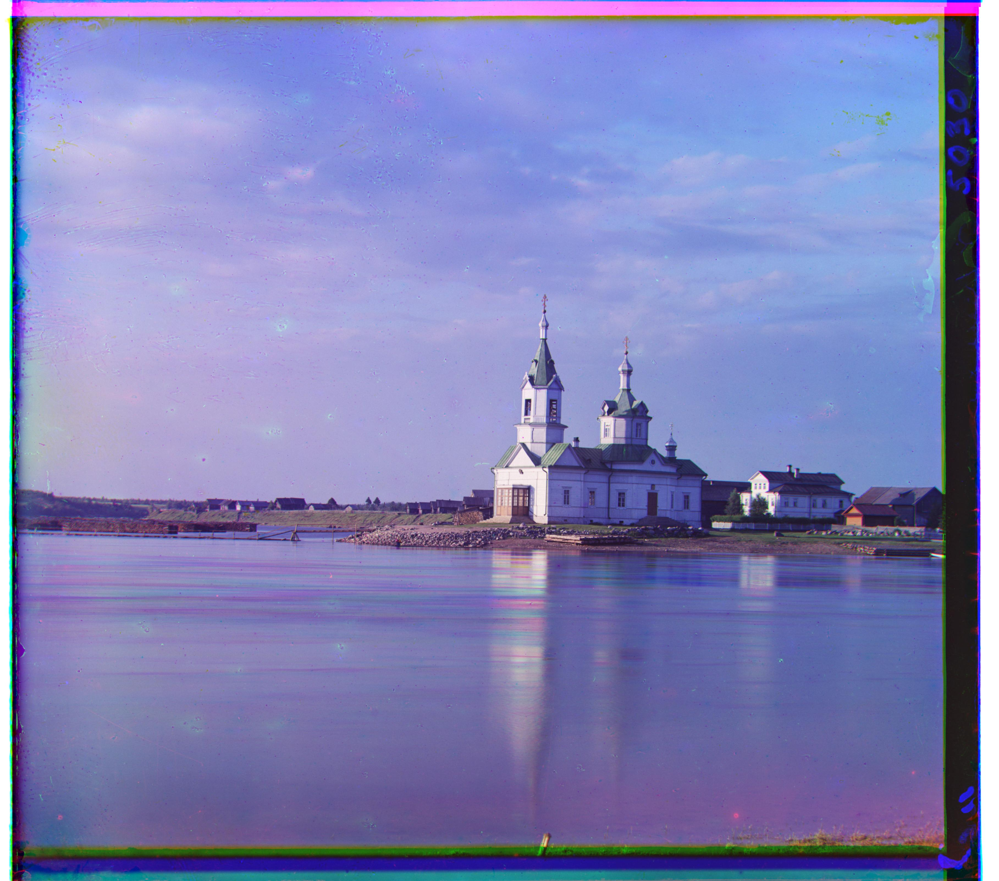
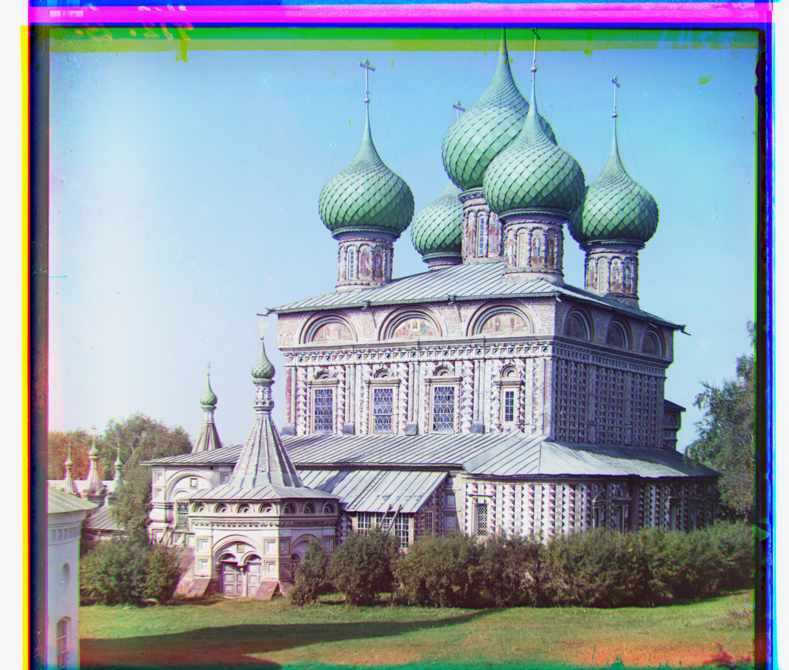
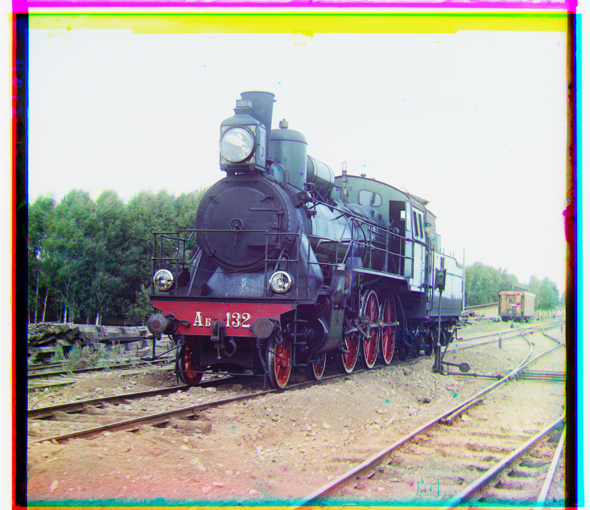

JPGs: Exhaustive Alignment
For the smaller.jpg files, we simply used a strategy of checking every possible
displacement within a [-15, 15] by [-15, 15] window. We can easily use np.roll in order
to displace one of the images, then use a metric to compare the similarity between the displaced image
and the original of the other image. Finally, we choose which displacement within the window minimizes
the metric we used.
For this project, I specifically used the L2 norm distance between the images as it was fairly simple to implement and still gave fairly good results for most of the images. Additionally, 5% of the sides and top and bottom were cropped when computing the L2 norm in order to reduce the image of the black boundaries and weird wraparound conditions.
Below are the results for the jpg images:

R: (12, 3), G: (5, 2) |

R: (3, 2), G: (-3, 2) |

R: (6, 3), G: (3, 2) |
TIFs: Image Pyramid Search
When we start dealing with must more detailed.tif images, the exhaustive approach is no
longer sufficient or computationally feasible. So, I used an image pyramid search which involved going
from the coarsest possible image and increasing quality to get back to the original image, while
adjusting our estimate for the optimal displacement. Images were made coarser using the
sk.transform.rescale function.
Additionally, we made some changes to the original align function, now allowing you to change the window size that is exhaustively searched over and to change the center of the window. For example, if the window size is 2 and the center is (3,5), the align function now searches over the window [1, 5] by [3, 7]. This allows us to update our optimal displacement by feeding the result of the previous recursive call (multiplied by 2 to account for upscaling) into the center argument. Also, due to the nature of the call, we can shrink the search window to [-2, 2] by [-2, 2] to help improve performance.
After these adjustments, we get the following results from the tif images:
|

R: (58, -5), G: (25, 3) |
R: (88, 43), G: (49, 24) |

R: (124, 13), G: (60, 16) |
|
R: (89, 23), G: (41, 17) |
R: (111, 12), G: (55, 8) |

R: (177, 11), G: (82, 9) |
|

R: (108, 36), G: (51, 26) |

R: (140, -27), G: (33, -11) |

R: (175, 34), G: (79, 29) |

R: (112, 10), G: (55, 13) |

R: (87, 32), G: (42, 6) |
Additional Photos
|
R: (125, 24), G: (57, 12) |
R: (-51, 9), G: (-73, -28) |
R: (101, -60), G: (-18, -34) |
Note: HTML style template inspired by Lillian Weng's website from Fall 2023.